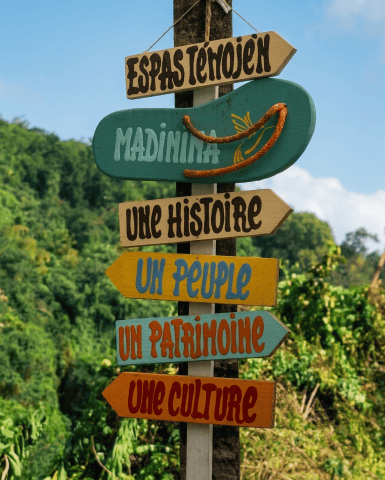

Nos Offres
Accueillir, Partager,
Transmettre
Visite contée en déambulation
Un parcours éducatif, sportif, santé et bien-être au cœur du domaine. Découvrez son histoire, sa biodiversité, la source, la chapelle, les ruines de la maison familiale et les sous-bois de zamanas. Une immersion complète dans un écrin de nature préservée.
Tables d'Hôtes
Plats mijotés dans des « coco nèg » et cuits à l'ancienne sur notre « fouyé difé » avec nos propres déchets de bois. Gastronomie locale et produits de la ferme, préparés avec amour et ancrage dans le terroir martiniquais. Une expérience culinaire qui raconte la terre et la mer, du jardin à l'assiette.
Événementiel en Pleine Nature
Espaces événementiels uniques pour séminaires, retraites, coaching et événements professionnels dans un cadre naturel préservé, loin du bruit et de l'agitation.
Pépinière & Produits de la Ferme
Plants locaux, variétés anciennes et produits du domaine : la pépinière est un acte de souveraineté alimentaire, une réponse concrète au mal-développement agricole.
Parcours Santé & Bien-être
Circuits sport-santé-bien-être pour une connexion pleine avec la nature. Un parcours pensé pour le corps et l'esprit, alliant activité physique et réharmonisation.
Culture & Histoire
Découverte de l'histoire du site, de la mémoire des lieux et des savoirs écologiques autochtones. Un hommage vivant aux générations passées et à leur héritage.

Une Parenthèse
Hors du Temps
Domenn Lantik propose des espaces de déambulation, de méditation, de réflexion et de ressourcement pour les personnes en transition et/ou victimes des aléas de la vie.
L'accompagnement est assuré par des professionnels de la santé et du bien-être, dans le respect des rythmes, besoins et attentes de chacun.
Méditation & Réflexion
Espaces dédiés au calme intérieur et à la reconnexion avec soi
Accompagnement Professionnel
Praticiens de santé et bien-être pour guider chaque étape
Naturothérapie
Soins par la nature, reliance au vivant, phytothérapie locale
Respect des Rythmes
Chacun évolue à son propre rythme, sans pression ni jugement
Venez découvrir
le domaine
Contactez-nous pour organiser une visite ou un événement dans ce cadre unique.